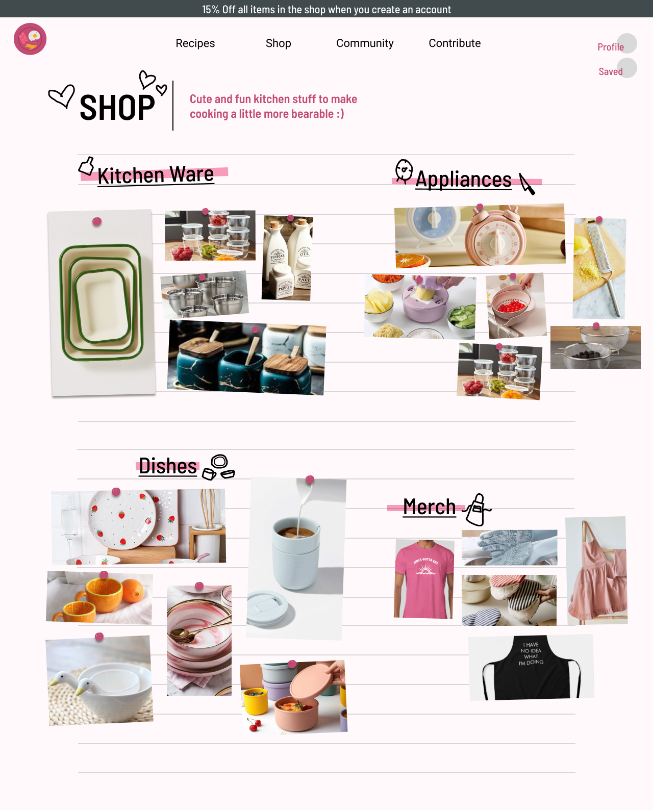

Overview
This is the final project I completed for my Visual Principles for the Screen course.
Throughout this course I was mentored by Heather Snyder Quinn, a well known design futurist in the academic space.
During this course I learned the basics of UI design and more, as well as how to use Figma, and its extremely useful plugins and extensions (like ArtBoard). This was an exciting project where we were allowed to be as creative as possible with our UI and design looks. The main goal of this project was to be able to analyze and fulfill a creative brief as you would in the real world.
Skip to the PrototypesCreative Brief
First, I drafted a creative brief to get a clear and comprehensive outline of the project's goals, objectives, scope, and creative direction.
Early Sketches and Low Fidelity Mock ups
After creating a brief, I began drawing up low-fidelity possibilities for the website layout.
From there I created very low fidelity mockups on Figma so I could begin doing color and type studies for the site.
The studies helped me trial run color pallets and typefaces so I could find combinations that matched the desired branding and theme of the site.*
*(Color and type studies are located in the Appendix of this page).

Mid Fidelity Mock Ups
After selecting the typefaces and color scheme for the site, I began creating mid-fidelity mock ups of the site, experimenting more with UI, and creating multiple iterations of the site.
High Fidelity Mock Ups & Reflection
Overall, I am happy with the final product of this project, as it was my first ever website design. While I am pleased with the product, I have many notes on how the site can be changed and improved, both aesthetically and functionally. This project taught me a lot about creating interactions in Figma, and the finalized site pages in Figma are all interactive. If you are interested in seeing the interactions, the Figma pages in the Appendix will allow you to toggle them.
See the Final Product
Mid-fid mock ups (see more in Appendix)
Final Pages
